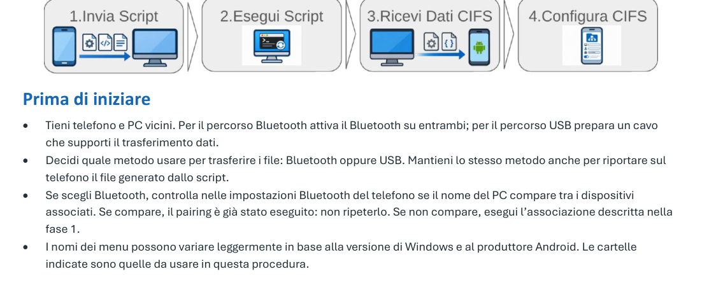

Fonte guida: REV9 · integrazioni processo: analisi v6 (porte, indicatori, auto-localizzazione) · nessun codice
DATI_CIFS.json).
Aperta dal tap su «qui» 🖨 in ogni fase online.
| # | Integrazione | Come compare in UI |
|---|---|---|
| A | Esegui dove arriva (opzione) | Online Fase 2: «Doppio clic su CONFIGURA nella cartella di ricezione oppure sul Desktop se li hai già copiati» |
| B | Script maggiordomo | Guida: all’avvio consolida i 3 file, overwrite, rimuove (1)/(2) |
| C | Ascolto Telefono | Fase 2→3: app in ascolto di DATI_CIFS.json (Download/BT/LAN); picker solo fallback |
| D | Porte + CTA d’azione | Niente Continua; CTA = Invia set / Usa questi dati / Attiva Catalogo |
| E | Lampade | Ambra = inviato/in attesa; verde = artefatto verificato; rosso = da ripetere |

In app: striscia compatta a 4 riquadri; fase corrente evidenziata, fasi concluse in verde.
Setup Catalogo personale
Modalità di associazione tra Telefono e PC
Attiva il collegamento tra il tuo telefono e il PC dove tieni il Catalogo. Mantieni lo stesso metodo anche per riportare DATI_CIFS.json.
Seleziona l’opzione:
Altre voci: NON ancora associati (pairing) · cavo USB
Fissa il ramo per Fase 1 e Fase 3.
Setup Catalogo personale
Fase 1 di 4 — Invio set di configurazione
Guida completa stampabile qui 🖨
(1)/(2)).
CTA = azione reale. Guida PDF spiega ricerca+copia Desktop.
Setup Catalogo personale
Fase 1 — dopo invio dall’app
Sblocca la Fase 2 (porta). Nessun «Continua» / «Puoi passare…».
Ambra = inviato dall’app, non ancora prova Desktop.
Setup Catalogo personale
Fase 1 — ramo USB
Guida completa qui 🖨
(1)).
USB: copia Desktop resta esplicita (come guida).
Setup Catalogo personale
Fase 2 di 4 — Esegui lo script sul PC
Guida completa qui 🖨
CONFIGURA.CMD (Desktop oppure cartella di ricezione).DATI_CIFS.json e ripulisce i duplicati (1)/(2) (maggiordomo).
Porta automatica verso Fase 3 quando arriva il file.
Setup Catalogo personale
Fase 3 di 4 — Dati CIFS ricevuti
Guida completa qui 🖨
DATI_CIFS.json (sessione corrente, senza (1)).Verde solo con artefatto verificato.
Setup Catalogo personale
Fase 3 — recupero / KO
(1))Controllo resta sulla Fase 3.
Messaggio KO letterale; niente autodichiarazioni.
Setup Catalogo personale
Fase 4 — Dati pronti da copiare su CIFS
Apri CIFS. Per ogni campo: Copia qui → incolla lì. Salva. Verifica che la cartella/dispositivo compaia nella lista CIFS (controllo umano, come in guida).
CTA finale = Attiva Catalogo (chiude il processo).
| Fase | Ramo | Testo online | CTA / porta |
|---|---|---|---|
| 1 | BT già / pairing / USB | Solo ramo scelto (REV9). BT: ricezione ≠ Desktop → cerca e copia sul Desktop (o avvia dalla cartella di ricezione). | Invia set… → Apri istruzioni script |
| 2 | tutti | CONFIGURA.CMD → attendi → DATI_CIFS.json; maggiordomo overwrite | Nessun avanti; ascolto attivo |
| 3 | stesso metodo | BT/USB come REV9; app rileva file senza caccia Download | Usa questi dati / Riprova |
| 4 | tutti | Copia campi → lista CIFS → Attiva Catalogo | Attiva Catalogo |
(1)/(2).DATI_CIFS.json.